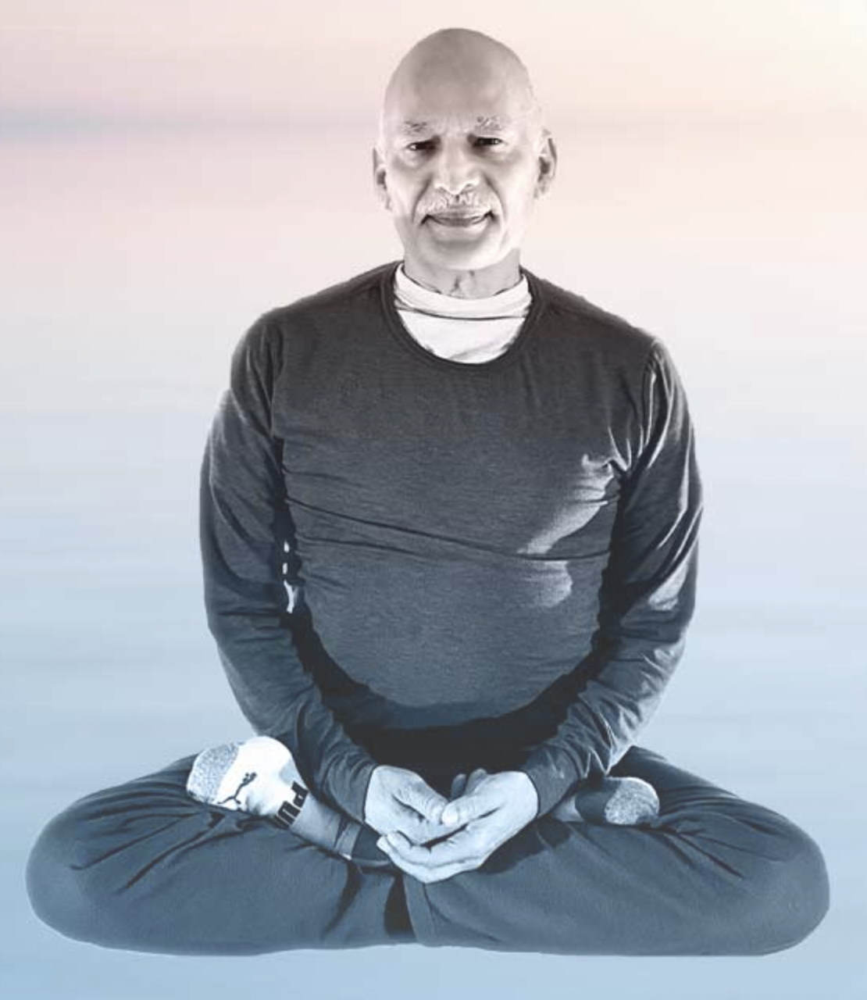

Meet the dedicated certified yoga practitioners who volunteer their time to serve our community.

Fondly known as "Shri Ji" and "Shri Kaka," Shrikant Sabnis retired after 40 years in safety-critical engineering to dedicate his life to teaching yoga and spreading love and compassion in his community.
For over 12 years, he has conducted free yoga at temples, community halls, volunteer homes, and online — traveling 70 miles a day and growing from local classes to 1,200+ global students.
Classes: Regular, Pranayama, Intermediate, Meditation, Kids Yoga
Our 30+ certified teachers volunteer across 70+ weekly classes. Add photos and full bios in WordPress.
Licensed PT leading specialized Osteoporosis classes on Friday evenings — blending therapeutic movement with yoga for bone strength and balance.
Physical TherapistLeads Acupressure sessions Tuesday and Thursday evenings, integrating traditional pressure-point healing with wellness education.
Acupressure PractitionerBrings precision to the Monday 7:30am Intermediate class, guiding students through advanced sequences with focus on alignment and breath.
Certified Yoga TeacherGuides the Tuesday 8:00pm Meditation session — a grounding practice helping participants unwind and cultivate mindful awareness.
Certified Meditation TeacherLeads the energizing Sunday 8:30am Sun Salutations and Intermediate session. Her dynamic style inspires students to explore their potential.
Certified Yoga TeacherCreates a welcoming, low-intensity Monday 11am session perfect for beginners, seniors, or anyone seeking a gentler practice.
Certified Yoga TeacherTeaches Wednesday 7pm Regular-75min class, combining traditional postures with breathwork for a comprehensive evening session.
Certified Yoga TeacherTeaches the Wednesday morning Regular class AND the Wednesday 8:30pm Meditation — bringing versatility and dedication to our community.
Certified Yoga TeacherShri Yoga welcomes certified teachers who want to volunteer and serve the community. Join our growing family of 30+ instructors.
Get In Touch